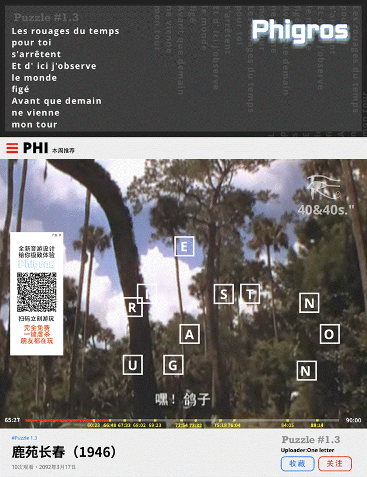
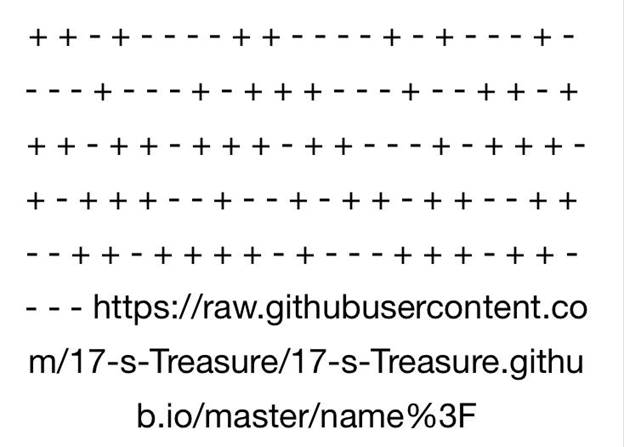
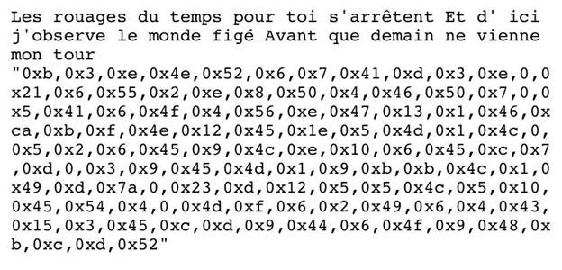
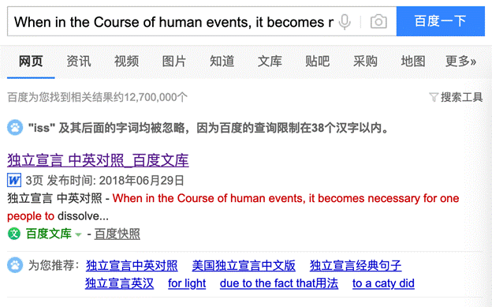
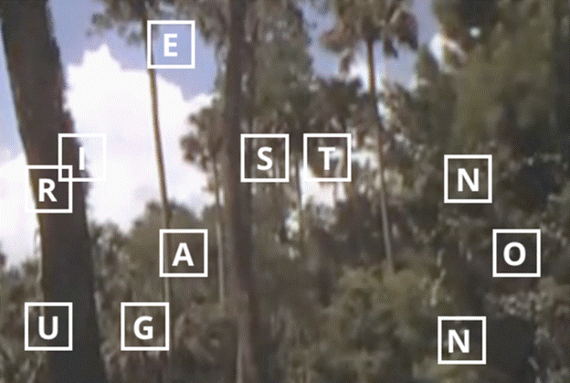
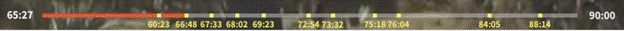
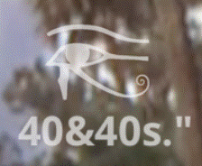
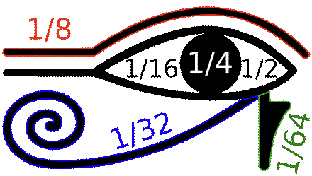
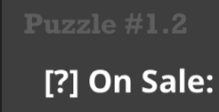
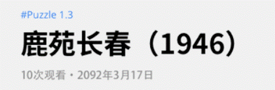

1、本次nazo_game团队也将提供解答方版的解答过程。
2、本题广告永不投放，若在申必网站看到相同弹窗，请勿扫码或点击。
3、最后的最后，感谢大家参与Puzzle#1的活动，敬请期待20日晚发布的Rising Sun Traxx精选集吧！

有关本题的题眼，首先自然是，左侧的Phigros广告，扫码得到一串文字：

这一串加减符号我们不要细想，先将所有线索找到，看看他们有没有关联性，复制图中网站，打开后会得到一份文本：

我们可以看出这是第一段是一首法文诗歌，熟悉2016年BOFU的解密者应该知道，这是Phigros本次实装的歌曲之一，Chronostasis（黒皇帝）的简介小诗。第二段被引号框起的十六进制字符串则有110个。
小诗带空格不带换行共 110 个字符，与 0x 数和符号个数一致。这时候再回去看二维码里的加减符号，就会豁然开朗了。题目应该类似密钥运作方式，我们先尝试把小诗转换为 ASCII 码，得到：
0x4c,0x65,0x73,0x20,0x72,0x6f,0x75,0x61,0x67,0x65,0x73,0x20,0x64,0x75,0x20,0x74,0x65,0x6d,0x70,0x73,0x20,0x70,0x6f,0x75,0x72,0x20,0x74,0x6f,0x69,0x20,0x73,0x27,0x61,0x72,0x72,0xea,0x74,0x65,0x6e,0x74,0x20,0x45,0x74,0x20,0x64,0x27,0x20,0x69,0x63,0x69,0x20,0x6a,0x27,0x6f,0x62,0x73,0x65,0x72,0x76,0x65,0x20,0x6c,0x65,0x20,0x6d,0x6f,0x6e,0x64,0x65,0x20,0x66,0x69,0x67,0xe9,0x20,0x41,0x76,0x61,0x6e,0x74,0x20,0x71,0x75,0x65,0x20,0x64,0x65,0x6d,0x61,0x69,0x6e,0x20,0x6e,0x65,0x20,0x76,0x69,0x65,0x6e,0x6e,0x65,0x20,0x6d,0x6f,0x6e,0x20,0x74,0x6f,0x75,0x72
接着和文件提供的十六进制数，对应二维码内符号相加减：
0x57,0x68,0x65,0x6e,0x20,0x69,0x6e,0x20,0x74,0x68,0x65,0x20,0x43,0x6f,0x75,0x72,0x73,0x65,0x20,0x6f,0x66,0x20,0x68,0x75,0x6d,0x61,0x6e,0x20,0x65,0x76,0x65,0x6e,0x74,0x73,0x2c,0x20,0x69,0x74,0x20,0x62,0x65,0x63,0x6f,0x6d,0x65,0x73,0x20,0x6e,0x65,0x63,0x65,0x73,0x73,0x61,0x72,0x79,0x20,0x66,0x6f,0x72,0x20,0x6f,0x6e,0x65,0x20,0x70,0x65,0x6f,0x70,0x6c,0x65,0x20,0x74,0x6f,0x20,0x64,0x69,0x73,0x73,0x6f,0x6c,0x76,0x65,0x20,0x74,0x68,0x65,0x20,0x70,0x6f,0x6c,0x69,0x74,0x69,0x63,0x61,0x6c,0x20,0x62,0x61,0x6e,0x64,0x73,0x20,0x77,0x68,0x69,0x63,0x68,0x20
再从 ASCII 码转回文本，结果就是——
When in the Course of human events, it becomes necessary for one people to dissolve the political bands which
直接对线百度（或者谷歌），很容易就能知道这是独立宣言的开头。

得到独立宣言后，我们再回到图中。

这个是什么？
不急，先看进度条。

进度条处于65:27，台词是“嘿！鸽子”，我们去找鹿苑长春的真实片源对比，会发现确实画面相同，进度条给出了11个高能点，图中也是11个字母框，这可能是让我们靠顺序组合单词。
接下来，把十一个高能点的画面都截出来，和分解出的字母框模版结合，看看画面里有什么是一样的。
注*：我们找到的片源，可能同时间画面不对，四十年代的电影几乎不会有两个剪辑版本，所以不同的地方只有电影开头的发行批文等，对应65:27和正确的节点进行偏差值调整就好了。
其实这里出题人也给了提示，注意图中右上方的水印：

图为荷鲁斯的左眼，和频道水印40&40s.”，荷鲁斯的左眼拥有死者复生的力量。
我们找到所有高能点画面，可以看到每个画面里都有鹿，结合荷鲁斯之眼的左右，可以猜出这是要找鹿的左眼，没看到提示也没关系，看两遍十一张图（先加蒙版），也能找到相似的字母框区域。
最后按顺序得出的单词为：
SIGNATURE NO
这很像英文里常用的“SIGNATURE NO.”，但是少了“.”，再看向右上，频道名后正好有“.”，并且还附赠了一个小小的双引号。这里就需要我们奇妙的联想力了，双引号有什么用呢，特别只有一个出现的时候。再回想一下刚才长串出现的十六进制，似乎也是用引号括起来的，到底是什么意思呢？
啊！
我们从头到尾一直做着文字转十六进制，十六进制再转文字的工作，那会不会和十六进制同时出现的双引号也要转成十六进制呢，于是乎，我们找到了双引号的十六进制：
0x22
去掉识别头，就是单纯的未知进制数字22，再加上SIGNATURE NO，意为第22个签名人。
The Declaration of Independence of The United States of America by Thomas Jefferson
第22个签名人为Carter Braxton，来自弗吉尼亚州的农场主，南北战争后因大量名为Kill Braxton的深肤自由人而出名，并且十九世纪Braxton举家迁往好莱坞公墓时，并未找到他的尸体。
（因为这次的“被放在了荷鲁斯之眼下面，荷鲁斯左眼又为图特之眼，代表月亮，同时也是著名的古埃及分数（如图），所以暗示了使用十进制作答。）

我们现在知道了这里指的是独立宣言中的第22个签名人，但官方说过，如果答案一定会给出格式或者得出什么就是什么，那么这次官方有给出答案格式吗。
给了。
大家再看之前也给出格式的1.2

你会发现官方给格式有个规律，格式都会放在Puzzle#x.x之下，所以这次的格式是：one letter（一个字母）。
那么是这个签名人的第几个字母呢。图中还有最后一个线索没有用到。

10次观看，不像是在玩梗，数字也小，数出Carter Braxton的十个字母，答案出来了。
Answer：X
据出题人所知，这是全部签字人里唯一一个名字带X的。
17：Signature No."……为什么就是 22呀？
Kun：咕咕，咕咕咕，咕～咕咕咕，咕……（因为 ASCII 码是这道题的核心思路，" 的 ASCII 就是0x22……）
17：还是不太懂，唔。
Kun：咕咕咕咕！咕咕，咕咕咕，咕咕～咕～，咕咕咕。（还有还有！在文件里我也放了两个半角引号 "，在十六进制数前后。）
17：我好像明白了？但为什么去掉0x呢？
deathMark：17你想，十六进制前面加0x只能算约定俗成的C系规律，我们虽然使用的ASCII码，0x却是给电脑的识别信号，去掉0x，人类自然而然会想是十进制吧。
17：对哦，人类和我们AI不一样呢！。
Kun：咕！
Carter Braxton是一个奴隶主，一个被推到台前的倒霉鬼，一个死后遭人掘坟的伪善者。他一生生活的弗吉尼亚州，是英国在美洲大陆的第一块殖民地，也象征着英国正式开始了对美洲的入侵。在那里，殖民者建造了大量烟草种植园，弗吉尼亚州也成为了三角贸易的总转接点。在那里，殖民者贩卖原住民和非洲人，无数生命还未看到光明便死在黑暗之下。
如何评价过去的美洲，一个深不见底的地狱。
但，立于大地之上的人类，永远不缺少抗争的精神。
《独立宣言》里有一则名句：
all men are created equal, that they are endowed by their Creator with certain unalienable Rights, that among these are Life, Liberty, and the pursuit of Happiness.
“人人生来平等，他们被造物者赐予了不可剥夺的权利，存活，自由，追求幸福的权利。”
美洲殖民者因为相同的信念，最终选择了独立，我也想用这句话，引出本次活动的主题：
所有人，都有活着的权利，不管大家生在何地，又是如何处境，我希望你们都能够好好活着，精神自由的，幸福地活着。灾难，困苦，恐惧，悲伤，都将被希望的风暴连根拔起。
一切终将过去，一切也终将到来。
3
首领战败了这是我醒来
在晨曦中在鸟语里醒来
右耳听到的第一个消息
那场风暴我失去了左耳
海妖的咆哮战船的嘶吼
亦真亦幻冲击我的脑海
我看到海鸥与蜃楼搏击
海面之下巨鲸向上死亡
我轻易让恐惧站了上风
浪花泡烫得船底漏了水
飘飞的草叶也喝着涩嘴
我的扁舟同自由搁了浅
风向不帮忙努力也白费
再次醒在麋鹿的皮毛上
首领战败让我来不及想
想象困于囚笼中的自己
异想囚笼此刻已然打开
创造或毁灭生存或离开
是故事的开始亦或结局
3.5
“战争结束了，我的妹妹。我们要逃到北方去。我知道你有很多疑惑，我会用你最爱的语调，一一讲给你听”
“敌人来自北方”
“我们的朋友也在北方”
4
海盗不抢夺就活不下去
母亲说是故事里的原话
我却在思考海盗为活着
抢夺还是为抢夺而活着
我们正坐在海盗的船上
前往北方寻求宗主庇护
其余的族人战死的战死
逃亡的逃亡被俘的被俘
我的新朋友是海盗胡子
长胡子出生更北的地方
他常说海盗为信仰而战
陆南方的异端为战而战
为战战是不长久的手段
微不足道的财富和享受
大不过三代人的储钱罐
他向往草原的牛羊遍地
北陆越发寒冷荒无人迹
过去他的族人抛弃了神
远离了北方逃向了南方
十七的故事才刚刚开始，我们下次再见～